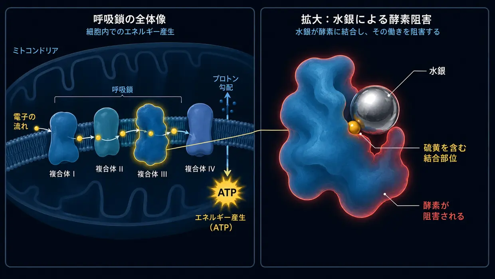

薬剤・毒性物質による耳鳴り（耳毒性）
最終更新：2026年6月
私も当時、極めて激しい、地獄のような耳鳴りの当事者でした。私の場合、当時の耳鳴りは典型的な騒音性耳鳴りで、主な引き金は騒音でした（薬剤によって急に起きたものではありません）。それでも、その絶え間ない音が私の神経、睡眠、そして人生全体を攻撃し続けるという点では、まったく同じでした。医師たちは私にも、ただそれと共に生きることを学ばなければならない、とよく言いました。
私が化学的な引き金についてこの記事を書くのは、このテーマが私自身の調査で重要な役割を果たしたからです。2012年から私は、毒性学や環境医学の分野も含め、細胞生化学に集中的に取り組んできました。そして、まさにここで話がつながります。環境医学の医師たち（Dr. KlinghardtやDr. Mutterなど）の現場では、実際、ある興味深い現象がよく観察されます。耳鳴りの患者に、隠れた毒性物質または重金属の負荷が大きな要因となっている場合、細胞レベルを対象とした解毒によって、耳鳴りがはっきりと、あるいは体感できるほど軽くなることがよくあります。ここで私が共有するのは、この調査から得た私自身の理解です――そしてそれは、こうした調査を基に、後ほどこのウェブサイトで扱う解決アプローチの土台でもあります。
内側からの化学的攻撃
耳鳴りと聞くと、たいていすぐに2つのイメージが浮かびます。轟音のコンサート（騒音）か、強烈なストレス、あるいは内面のトラウマ・ストレス（心身相関）です。しかし、機械的でも感情的でもなく、純粋に化学的な第3の引き金があります。薬剤・毒性物質による耳鳴りです。私の見方では、この種の耳鳴りは最も少ない部類に入ります――それでも全体を漏れなく扱うため、この第3の引き金についても私の見方を述べます。専門用語ではこれを耳毒性（直訳すると「耳に対する毒性」）と呼びます。
最初は抽象的に聞こえるかもしれませんが、私たちの内耳は、ある種の化学物質に対して極めて敏感です。薬剤や環境毒性物質の中には、血流を通じて内耳へ直接入り込み、そこにある繊細な有毛細胞や聴神経を刺激したり、さらには損傷させたりするものがあります。
メカニズム：化学物質が音を生む仕組み
不動毛（ステレオシリア）の先端にあるイオンチャネルを思い出してみましょう。過負荷の後に開きすぎたままになり、正しく閉じなくなるチャネルです――すでに私の騒音性耳鳴りのページで説明しました。騒音外傷では、音波の強烈な機械的力によって、繊細な不動毛の幾何学的な位置関係が変わります。
薬剤・毒性物質による耳鳴りでは、最終的には、非常によく似たことが起こる場合が多いのですが、そこに至る道筋は別です。耳の一つ一つの有毛細胞を、基本的には小さな生体電池のようにイメージする必要があります。有毛細胞は、エネルギー（ATP）、ミネラル、電位の極めて精密なバランスを保っています。
環境毒性物質や毒性用量の薬剤は、細胞内の発電所――専門用語でミトコンドリア――の機能を大幅に損なうことで、この精密なバランスを乱すことがあります。私の生化学的理解では、細胞レベルで次のことが起こります：
ミトコンドリアは細胞へのエネルギー供給に欠かせないため、その結果、細胞のエネルギーレベル、つまりATPレベルが低下します。すると、細胞の壁にある小さなポンプは、働くためにATP――つまり細胞エネルギー――を絶えず消費するため、化学的なバランスを保つのに必要な速さで、もはや働けなくなります。その結果、カルシウムが細胞内に蓄積します。カルシウムは生物学において刺激伝達の直接の引き金であるため、このイオンの過剰によって、細胞は絶え間なく、制御されずに「誤信号」を発するよう強いられます。私にとって、これは神秘的な偶然ではなく、筋の通った生化学的な自動反応です。この電気的な連続発火を、脳が音として知覚します。
そこでどんな音が聞こえるか――高いピー音なのか、シューという音なのか、それとも低いうなり音なのか――は、多くの場合、影響を受けた有毛細胞が蝸牛（かぎゅう）の正確にどの位置にあるかによって決まります。このとき、多くの場合、耳が物理的に破壊されるわけではありませんが、その繊細な内部秩序が狂います。
電気的な短絡（聴神経）
危険にさらされるのは有毛細胞だけではなく、「電気ケーブル」そのもの――聴神経もです。この神経は、ミエリン鞘という保護層に包まれています。この絶縁層は脂質とミネラルを極めて豊富に含むため、血液中を循環する毒性物質に特に敏感に反応します。この鞘が化学的ストレスによって弱くなったり「薄く」なったりすると、神経は信号を正しく伝えられなくなります。まさに電気的な「短絡」が生じます。
そしてここに、私たちの身体構造そのものに基づく、明快な論理が見えてきます。聴神経は単純な一本の導線ではなく、何千本もの微細な神経線維が集まった太い束です。その一本一本が、それぞれ特定の音の高さを伝える役割を担っています。有毒物質による短絡（ミエリンの分解）が、高周波を担当する神経線維のまさにその場所で起きれば、脳は当然、高いピー音として捉えます。低い音を担当する線維が影響を受ければ、低いうなり音が聞こえます。どのようなザー音、シュー音、ピー音を知覚するかは、まったく偶然ではありません――メインケーブルの絶縁がどの微細な箇所で損傷したかに大きく左右されます。
耳鳴りの普遍法則
これらすべてのパズルのピースを組み合わせると、1つの中心的な共通項が浮かび上がります。私が心の底から確信していることと、自身の経験から言えば、耳鳴りは結局のところ、慢性的に刺激され、過剰に興奮した聴覚情報処理系の神経がもたらす結果です。この過剰興奮の号砲が正確にどこで鳴るかは、物理的にはほとんど関係ありません：
- 有毛細胞が（騒音や薬剤によって）緊急運転から抜け出せなくなり、聴神経にグルタミン酸を絶えず浴びせ続けているのか……
- 環境毒性物質や重金属が神経の絶縁層（ミエリン）を攻撃し、そこで直接的な短絡を引き起こしているのか……
- それとも、強烈で慢性的な、心身相関を伴うストレスが脳内に蓄積し、聴覚情報を処理する中枢を、いわば「上から」絶えず通電しているのか……
この普遍的な論理をひとたび理解すれば、耳鳴りはしばしば、その神秘めいた恐ろしさを完全に失います。
最終的な結果は、私の経験では、ほぼいつもまったく同じです。この領域の神経系は慢性的に刺激され、電気的なSOS信号を絶え間なく乱射します。この普遍的な論理をひとたび理解すれば、耳鳴りはしばしば、その神秘めいた恐ろしさを完全に失います――そして解決への道が突然、はっきりと見えてきます。
典型的な引き金（耳毒性物質）
さて、話を先へ進めましょう。耳毒性を示す可能性があると知られている物質は、数多くあります。（重要：これは自己診断のための医学的な一覧ではなく、一般的な理解のためだけのものです！）
1. 薬剤
薬剤の中には、内耳を過剰に刺激しうるものがあります。しかし、名前を知るだけでは不十分です――なぜそれらがシステムを破綻させるのかを理解しなければなりません。損傷の仕組みを理解して初めて、その後の私たちのアプローチ（細胞エネルギーと解毒）が、そもそも意味をなします。特によく知られているグループは次のとおりです：
高用量の鎮痛薬（特にアスピリン／ASS）
まず、安心のために言っておきます。普通の頭痛薬1錠だけで耳鳴りになることは、通常ありません。研究によれば、ここにはしばしば、明確な用量のパラドックスがあります。危険になるのは通常、本当に毒性を示す高用量（多くは1日数グラム）になってからです。そうなると、薬理学的モデルは、その薬剤が内耳で3段階の連鎖反応を引き起こすことを示唆しています：
- エンジンがガタつく：有効成分がプレスチンを阻害すると考えられています。プレスチンは、外有毛細胞の中でエンジンのように働く微小なタンパク質です。その結果、耳の音響増幅機能が崩れます。パニック反応として、脳は何かを少しでも聞き取ろうと、中枢の「音量調節器」（中枢性ゲイン）を最大まで上げることがよくあります。
- 神経の過敏性：同時に、モデルは、その薬剤が聴神経の受容体の興奮性を高めることを示唆しています。刺激閾値が下がるため、神経系はごく小さな信号にさえ、以前より明らかに敏感に反応するようになります。
- 停電（点火）：生化学研究によれば、高用量のアスピリンはミトコンドリア内で「脱共役剤」として作用します。比喩的に言えば、細胞の電源プラグを抜くのです（ATP不足）。そして、まさにここに、騒音外傷との興味深く論理的な違いがあります。騒音の場合、音の機械的な力によって、細胞の微細な不動毛が文字どおり曲げられます。その結果、カルシウムチャネルは引っかかったドアのように開きっぱなしになり、カルシウムが制御されずに流れ込みます。アスピリンを過剰摂取した場合、これは起こりません。不動毛はまったく損なわれず、本来の位置に立っています。ここでは、「単に」化学的なバランスが崩れているだけです。流れ込むカルシウムの量は普段より多いわけではありません――しかし、エネルギーが急激に低下するため、細胞の微小なカルシウムポンプは、それを再び外へ運び出す処理にどうしても追いつけなくなります。この瞬間、細胞は通常量のカルシウムにさえ、まったく対処できません。最終的な結果は同じです。カルシウムが細胞内に蓄積し、細胞は伝達物質のグルタミン酸を途切れることなく放出するよう強いられます。
耳鳴りとして起こりうる結果：この制御不能なグルタミン酸の洪水は、すでに刺激閾値が下がった神経（第2段階）にぶつかり、音量調節器を限界まで上げた脳（第1段階）へ送られます。耳をつんざくような絶え間ない乱射が始まります。そして、まさにこの単純な細胞レベルの論理が、日常で見られるある現象も説明します。その現象については、多くの医師でさえ、筋の通った答えを持ち合わせていないことが少なくありません。なぜ、1週間にわたってアスピリンを大量に服用しすぎたある叔父は、服用中止後、多くの場合、短期間で再び耳が静かになるのに、その叔父の26歳の甥は、騒々しいディスコへたった2回行っただけで、4か月もの間、どうしても消えない耳鳴りに苦しみ続けているのでしょうか？ 私にとって、答えはこれ以上ないほど明白です。叔父の場合は、聴神経の過敏性を伴う生化学的な停電でした。薬剤が医師との相談のうえで中止され、身体から排出されるとすぐに、細胞の発電所は再び通常の生理的モードで働けるようになります。その結果、ポンプは必要なエネルギーを再び得て、余分なカルシウムを除去できるようになり、システムも再び問題なく働けます。一方、ディスコへ行った甥には、荒々しい機械的な暴力が加わりました。私の調査と理解によれば、その後、彼の微細な不動毛の幾何学的な配置が変わっています。傾きが大きいものもあれば、小さいものもあります。そのため、イオンチャネルは恒常的に大きく開いたままになり、エネルギー供給が変わらなくても、生理的に想定されている量より多くのカルシウムが細胞へ流れ込みます。これは、ドアの蝶番を荒々しい力で曲げたようなものです。そして、騒音が終わったからといって、週末の間にひとりでに簡単に直るわけではありません――詳しくは、私の騒音性耳鳴りのページをご覧ください。
特定の抗菌薬（アミノグリコシド系）
これらの強力な抗菌薬は、重い細菌感染症に対して、たいてい病院でのみ使用されます（例：ゲンタマイシン）。これらには、極めてたちの悪い性質があります。内耳の液体に選択的に蓄積することが多く、そこからは気が遠くなるほどゆっくりとしか分解されないため、数週間から数か月にわたって残ることがあります。そこで体内の鉄と反応し、「フリーラジカル」（ROS）を爆発的に大量発生させます。それは、敏感な細胞膜と不動毛内部のアクチン骨格を襲う、生化学的な大火災のようなものです。ここでは、単純な生物学的論理によって、結末が2つに分かれます：
- 結末1（細胞死）：この時点ですでに身体が弱っているか、栄養素の蓄えがほとんど残っていないか、以前から損傷がある場合、細胞はこの化学的な大火災に耐えきれず完全に崩壊し、死にます（アポトーシス）。逆説的な結果として、この場合、通常は耳鳴りが生じません。死んだ細胞はもう信号を発しません。その代わり、まさにその周波数で、耳鳴りを伴わない純粋な聴力喪失（失聴）が生じます。
- 結末2（生存闘争＝耳鳴り）：細胞は攻撃をかろうじて生き延びますが、構造には深刻な損傷が残ります。根本的には騒音外傷とまったく同じで、ただ純粋に化学的に引き起こされる点が違います。硬い内部骨格（アクチン）が崩壊し、不動毛は水のない花のように文字どおりしおれます。しかし、細胞はまだ生きています！ そして生きているからこそ、穴だらけの膜を通って流れ込むカルシウムと必死に闘います。このイオン流入は刺激伝達を命じる直接的な化学信号であるため、重度に損傷した細胞は、パニックモードに陥ったまま、伝達物質のグルタミン酸を聴神経へ途切れることなく撃ち続けるよう強いられます。この細胞レベルの生存闘争が、電気信号の絶え間ない乱射となり――それこそが耳鳴りとして知覚されるものです。
利尿薬（強力な水分排出薬）
いわゆるループ利尿薬は、身体から水分を奪うだけでなく、カリウムやナトリウムなどの電解質を大量に排出させます。問題は？ 内耳には、血管条という独自の小さな電圧源があります。この組織層は、一定の電圧を保つため、耳の液体へ休みなくカリウムを送り込みます――これは、有毛細胞が聴覚に必要な電力を得るための電池です。利尿薬は、まさにこの生化学的なポンプ機構を阻害します。その結果、耳の電圧は大幅に低下します。生物学的な電池は突然「空」になり、聴覚システムは混沌とした警報状態に陥り、その状態がザーッという音やピーという音となって現れます。
化学療法薬（シスプラチンなど）
これらの攻撃性の強い抗がん薬は、多くの場合、プラチナ（重金属）を基にしています。細胞のDNAに干渉するようプログラムされています。ただし、この薬剤によって耳鳴りが起きる場合、薬理学的モデルによれば、その原因は内耳で起きる本物の生化学的な大火災です。この場合、シスプラチンは細胞から、最も重要な体内由来の防御物質（グルタチオン）を完全に奪います。この防御盾がなければ、フリーラジカルが細胞膜に微細な穴を食い開け、イオンポンプを破壊します。その結果、極端なイオンの不均衡が生じます。カルシウムが細胞へ押し寄せ、細胞をグルタミン酸の絶え間ない乱射へ追い込みます。同時に、シスプラチンは強い神経毒性を持ち、聴神経のミエリン層（絶縁層）を文字どおり分解します。損傷した細胞の絶え間ない乱射が、保護を失ってむき出しになった神経にぶつかると、脳へ向かう主幹ケーブル上で、実際に測定可能な短絡と誤発火が生じます。ここでも、耳鳴りをめぐる生物学的な分かれ道が当てはまります。細胞が完全に破壊されると（アポトーシス）、通常は静寂（失聴）が生じます。膜に穴が開き、神経がむき出しになった、重度に損傷した廃墟として生き残ると、細胞はしばしば持続的な異常信号を発します。これが、化学療法による耳鳴りがしばしば極めて頑固である理由です。
キニーネ（マラリア治療薬・筋けいれん抑制薬）
キニーネには強い血管収縮作用があります。内耳は解剖学的に完全な袋小路です――血液は、たった1本の極めて細い動脈（迷路動脈／Arteria labyrinthi）からしか供給されません。そこには「迂回路」がありません。キニーネがこの細い動脈を収縮させ、同時に赤血球の柔軟性を低下させると、血流が滞ります。すると、有毛細胞は不可欠な酸素と栄養素の供給を断たれます。激しい呼吸困難に陥り、即座に耳鳴りのパニックモードへ切り替わります。
2. 重金属＆環境毒性物質
水銀、鉛、アルミニウム、さらにはカドミウムなどの重金属は、細胞レベルで極めて攻撃的な破壊工作員のように振る舞います。徹底した解毒プロトコルに取り組んでいる人なら知っているとおり、重金属は内耳の細胞をただ漠然と毒するだけではなく、生物学的なプロセスそのものに食い込み、それを遮断します。これは蝸牛と聴神経で、4つの極めて破壊的なメカニズムを通じて起こります：
- 01トロイの木馬
- 02チオール・ハック
- 03解体用鉄球
- 04ミエリン・シュレッダー
メカニズム1：トロイの木馬（微量元素の置換）
カドミウムや水銀などの金属は、化学的に見ると、生命維持に欠かせない微量元素――とりわけ亜鉛やセレン――と、しばしば驚くほどよく似ています。体はだまされ、亜鉛の代わりに重金属をタンパク質へ組み込んでしまいます。結果は致命的です。なぜなら、亜鉛は聴神経の受容体で天然の「ブレーキ」のような役割を果たすからです。ごく小さな刺激のたびに神経が即座に過剰反応しないよう抑えています。この亜鉛が重金属に押しのけられると、そのブレーキは完全に利かなくなります。音の信号がブレーキなしで神経系へ激突し、私の経験では、耳をつんざくような耳鳴りとして現れます。同時に、セレンが押しのけられることで、体内で作られる最も重要な抗酸化物質（グルタチオン）の産生が著しく妨げられます。細胞の防御は崩壊の危機に陥ります。
メカニズム2：チオール・ハック（タンパク質をねじ曲げる）

重金属はさらに、硫黄に対して極めて強い化学的親和性を持っています。私たちの酵素や微小な細胞ポンプ（ATP駆動型カルシウムポンプなど）の大半には、チオール基（-SH）と呼ばれる、硫黄を含む結合部位があります。重金属が内耳に到達すると、すぐにこのチオール基へ結合します。金属が酵素と結びついた瞬間、タンパク質は3D構造を変えるよう強いられます――文字どおり、ねじ曲がるのです。そのため、有毛細胞のカルシウムポンプはブロックされ、機能を失います。
メカニズム3：生物学的な解体用鉄球（細胞の直接破壊）
ポンプへの破壊工作だけでなく、金属は細胞のハードウェアを直接、物理的にも攻撃します。鉛とカドミウムはミトコンドリア（細胞の発電所）へ侵入し、細胞の呼吸鎖に入り込んで、ATP産生を激しく抑え込みます。比喩的に言えば、細胞は内側から窒息しかねません。同時に、金属は耳の中でフリーラジカルの爆発を引き起こします。フリーラジカルは、有毛細胞の脂質に富んだ保護膜（細胞膜）を文字どおり酸化させます――膜は酸敗し、溶け、穴だらけになります（脂質過酸化）。毒性を帯びたカルシウムが、決壊したダムから流れ込むように押し寄せます。さらに金属は、小さな不動毛の内部にある強固なタンパク質の骨格（アクチン）を攻撃します。分子の橋が崩れ落ち、不動毛はしおれ、折れ曲がり、刺激チャネルを開きっぱなしの状態で固着させます。
メカニズム4：ミエリン・シュレッダー（主幹ケーブルへの攻撃）
重金属はケーブルそのもの――聴神経――にも直接食い込み、その絶縁層であるミエリンを破壊します。この層はほぼ80％が脂質でできているため、酸化ストレスにとって格好の餌食です。フリーラジカルは、文字どおり脂質を腐食させ、削り取ります。たとえば水銀は、絶縁層の分子的な接着剤である「Myelin Basic Protein」に結合し、その結果、絶縁層が剥がれ落ちます。毒性学では、鉛はさらに一歩進み、いわゆるシュワン細胞を狙って損傷させるのではないかと強く疑われています――シュワン細胞は、本来ミエリンを修復する小さな作業員です。絶縁がなくなると、聴覚の電気信号は著しく遅くなり、隣接するむき出しの神経線維へ飛び移り（クロストーク）、激しい誤発火を引き起こします。
-
01化学物質の流入
毒性を示す高用量の薬剤、または重金属／環境毒性物質が血流を通って内耳に到達する。
-
02バランスが崩れる
ATPが低下し、ポンプが処理に追いつかなくなり、カルシウムが細胞内に蓄積し、ミエリンが薄くなる。
-
03持続する異常信号
弱った細胞がグルタミン酸を絶え間なく撃ち出すか、信号が隣の神経線維へ飛び移る――脳はそれを音として知覚する。
それなら、なぜ誰もが耳鳴りになるわけではないのでしょうか？（重金属のくじ引き＆パーフェクト・ストーム）
ここで当然、1つの疑問が浮かびます。水銀（魚やアマルガム由来）、鉛（古い配管由来）などがこれほど激しく破壊をもたらすなら、なぜツナピザを食べた後、すぐに人類の半分が耳鳴りにならないのでしょうか？ 答えは、私たちの体に備わる防御盾と、まさに生物学的なくじ引きにあります――そして、耳鳴りが単一の孤立した要因だけで引き起こされることはほとんどない、という事実にもあります。
1. 毒性学的なくじ引き（局所的な弱点）：
重金属には、耳を目指すGPSシステムが内蔵されているわけではありません。血液中をあてもなく巡り、最も抵抗の少ない場所（Locus minoris resistentiae）を探します。どこに沈着するかは、しばしば純粋な偶然で、そのときあなたの体のどこに弱点があるかに左右されます。たとえば、夜に激しい歯ぎしりをしていたり、首から顎にかけて自覚のない炎症があったりすると、耳の周囲の血管透過性は極めて高くなります。本来は耳を守るはずの、いわゆる血液迷路関門が、そのとき大きく開いた状態になります。水銀はこの開いた扉を見つけ、まさにその場所の聴神経に沈着しますが、別の人では、そのまま先へ移動するだけかもしれません。
2. 体内のごみ処分場、グルタチオンの防御盾＆生まれたときからの蓄積：
健康な体は肝臓で大量のグルタチオンを作ります。グルタチオンは、重金属が耳に到達する前に、まるで手錠をかけるように拘束し、体外へ排出する分子です。しかしここで、体内に入ってくる量という厳しい現実が関わってきます。人によっては、単純に――しかも多くの場合、まったく気づかないまま――重金属への接触量が、ほかの人よりはるかに多いのです。汚染された空気、口の中の古いアマルガム充填物、職場、喫煙、重金属を含む食品、あるいは汚染された日用品との絶え間ない接触などです。結局、それはいつも、体内への流入量そのものと、毒を結合して排出する体自身の力とが絡み合った、毒性の複合状態です。体がそれを処理しきれないと、毒性物質を血流から引き離すため、しばしば一見安全な「処分場」（骨や一般的な脂肪組織など）に蓄えます。そしてまさにここに、私たちの聴覚にとって致命的な生物学的わなが潜んでいます。私たちの神経系――とりわけ聴神経を絶縁するミエリン層――は、ほぼ80％が純粋な脂質でできています。そのため、体が脂溶性（脂に溶ける性質）の重金属を脂肪組織に「一時駐車」させようと必死になれば、くじ引きの不運な組み合わせにより、まさにこの極めて敏感な神経組織や有毛細胞周辺の構造が巻き込まれることがよくあります。
さらに、厳しく、しかもしばしば語られない生物学的事実があります。多くの人は、生まれたその日から、すでに体内の「貯蔵庫」が満たされた状態でこの毒性学的なくじ引きを始めます。なぜでしょうか？ 調査からは、母親が妊娠中、自分の体内に何年もかけて蓄積した重金属の一部を、胎盤を通して胎児へ渡すことが示唆されているからです。つまり、人によっては、細胞という樽の中身が最初からすでにかなり多いのです。
最終的に危険になるのは、この防御システムが崩れたときです。極度のストレス、遺伝、栄養不足により、解毒機能が突然、限界まで追い込まれます。体内の処分場が開くか、あるいは新しく入ってきた毒性物質がそもそも捕捉されないまま血液中を巡り、先ほどのくじ引きのように、必然的に体の弱点を探します。
3. 致命的な複合状態（パーフェクト・ストーム）：
しかし、生物学的な現実では、ここでしばしば極めて複雑な複合状態が見られます――これは、騒音にさらされた後に耳鳴りになった人は誰でも、自動的に重金属に完全に毒されているはずだ、という誤解も解消します。そうではありません。
むしろ、よく起きるのは次のようなことです。ある人は、環境毒性物質や重金属によって、有毛細胞、そのミトコンドリア、または聴神経そのものに、すでにある程度の毒性負荷を抱えています。ミエリン層はすでに少し薄くなっているかもしれず、カルシウムポンプもすでに限界に近い状態で働いており、細胞はまさに限界ぎりぎりです。それだけでは、まだ持続的な耳鳴りがまったく起きないこともよくあります。体はそれを受け止め、綱の上でかろうじてバランスを保っています。
しかし、そこへ人生のさまざまな出来事が重なります。極度の慢性ストレスにさらされる時期に入ります。ストレスホルモン（アドレナリン／コルチゾール）は血管を収縮させ、耳の血流を大幅に絞り、修復のための睡眠を奪います。システムは夜間に再生できなくなります。まさにこの脆弱性が極めて高まった状態で、さらに騒音負荷にさらされると（急性の騒音ピークであれ、慢性的な持続騒音であれ）、この連鎖のどこかで、システムはついに崩れます。すでに損傷したハードウェアは、この機械的な衝撃をもう受け止めきれません。イオンバランスが崩れ、アクチン骨格が崩壊するか、ミエリン層がついに機能しなくなり――持続的な電気信号が生じる可能性があります。
私の見方では、これは致命的な組み合わせです。毒性物質がハードウェアをじわじわ弱らせ、ストレスが酸素供給を断ち、そして騒音は、多くの場合、すでに縁まで満ちた細胞の樽をあふれさせる最後の一滴にすぎません。
私の見解では、スペクトラムの反対端には、もちろん、毒性のある薬剤または重度の重金属中毒だけによって引き起こされる耳鳴りもあります。化学物質の用量が十分に高ければ（たとえば、攻撃性の強い化学療法や急性中毒によって）、「パーフェクト・ストーム」も追加の騒音曝露も、まったく必要ありません。そのような場合は、毒性物質だけで、細胞の発電所を停止させたり、神経を損傷させたりするのに十分です。
毒性物質による耳鳴り（重金属・農薬）は、なぜしばしばこれほどしつこく長引くのか
騒音を避ければ、引き金を即座に断ち切れます。毒性物質による耳鳴りの場合――ここで私が具体的に言っているのは、実際の環境毒性物質、農薬、重金属による負荷です――事情は、多くの場合、かなり複雑です。このタイプがこれほど極端にしぶとく、長引くものになるのは、とりわけ、こうした物質が実際に耳鳴りの主なメカニズム、または大きな要因であると判明したときです。なぜなら、こうした物質は、まさに神経組織や細胞の奥深くにまで蓄積するからです。普通の鎮痛薬のように、数時間たてば血液中から簡単に消えるわけではありません。毒性物質はそこにこびりついて離れず、身体はこうしたしつこい毒性物質を、多くの場合、非常に苦労しながら、ごくゆっくりと、長い時間をかけてしか排出できません。
どうすればよいのか？
では、今、何ができるのでしょうか？ここで説明したメカニズムについての科学的な根拠と実践上の根拠は、私の出典ページにあります。さらに深く掘り下げ、薬剤性耳鳴りや毒性物質による耳鳴りに対して、私の見解と経験では具体的に何が役立つのかを知りたい方は、下のリンクをクリックしてください：
重要な注意事項
処方薬を自己判断で絶対に中止しないでください！薬の服用に関連する耳鳴りがある場合――特に急に現れた場合は――今後の対応を確認するため、速やかに医師に相談してください。服薬内容を変更する場合は、どのような変更であっても医師の管理のもとで行ってください。
このウェブサイトで共有している内容、説明モデル、戦略は、医療上の助言ではなく、私個人の体験談と私自身の調査です。身体は一人ひとり異なります。私は医師ではなく、治癒を約束しません。健康上の症状がある場合は、資格を有する医師に相談してください。ここで説明したアプローチの実践は、自己責任となります。